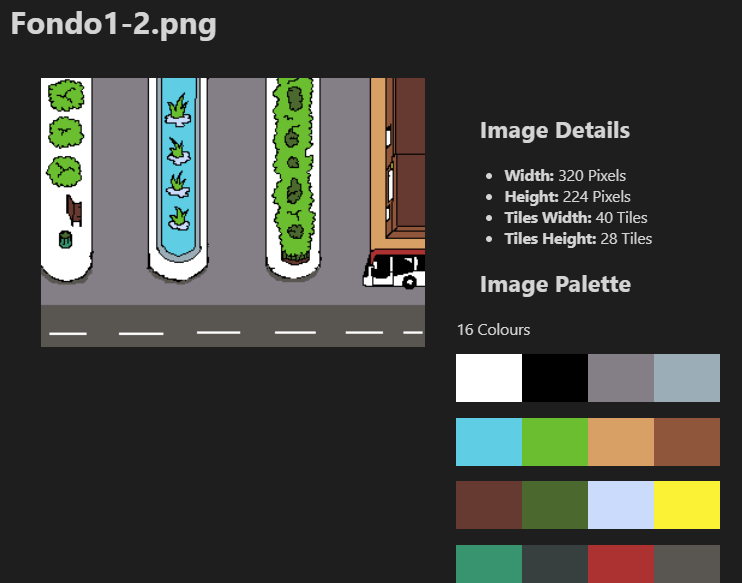
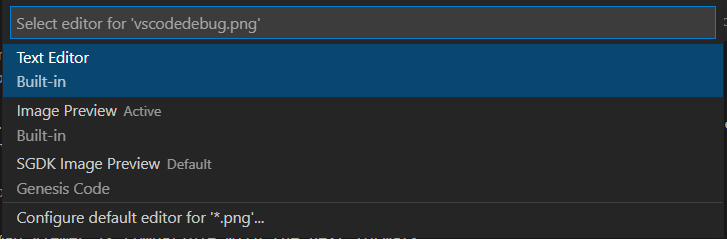

Bitmap Viewer
Since 1.3.3 version, you can see the Custom Image Viewer; with this editor, you can see some Image Information like width, height, tiles or colour palette.

In this editor you can see:
- Image file name.
- Image Preview.
- Image width in pixels.
- Image height in pixels.
- Image width in tiles (8x8).
- Image height in tiles (8x8).
- Image Palette
The bitmap Viewer is compatible with the next image formats:
- BMP
- PNG
- JPEG
- JPG
To open a Image with this editor, rigth click in the tab titble and select the option of Reopen Editor With..., and select SGDK Image Preview.
